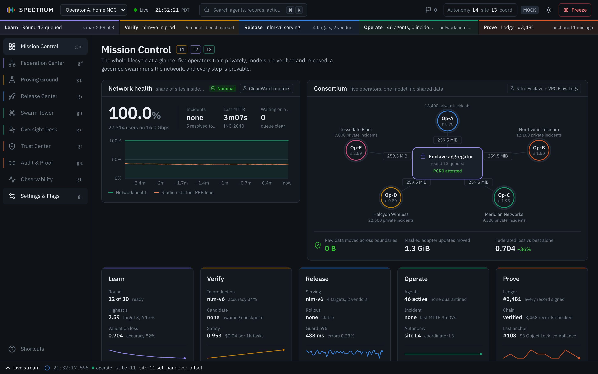

Every console screen sits inside the same frame: a top bar, the five-colour lifecycle ribbon,
a rail of screens on the left, a live event stream at the bottom, and a set of tools that float on top
(the Demo Director, the inspector, the command palette, toasts and the keyboard help). This page explains
what each part of that frame does, where its data comes from, and how to read any panel on any screen.
Read the box below first; the numbered cards further down are reference.
On every console route except /m/approve, /presenter and /dossier/…Keyboard help: ?The ribbon is lit in demo beats
114
On stage you only need this
A beat is one step of the scripted 14-step demo (each takes about 20 to 40 seconds). These six keys run
the whole demo:
→ or PageDown
Next beat (a presentation clicker sends PageDown).
Esc
Clear the highlights so the whole screen shows. It also closes the inspector, and when it does, the highlights go too.
s
Spotlight on or off (fades the panels that are not part of the beat).
d
Hide or show the Demo Director panel.
l
Open or close the live stream of events at the bottom.
Hold r 1 s
Reset the scenario to the pre-demo state.
Before the judges arrive:
Open the console as http://localhost:5173 on the presenting laptop itself.
Hold r for one second to reset.
Open the Director's Preflight tab and check that every row is green. "Approval phones connected" stays
amber until a phone (or another screen) has the console open.
If the main screen is a projector, press t for the light Projector theme.
The frame is drawn by frontend/src/app/Shell.tsx. It is the same on all ten screens; only the
middle area (the page) changes when you move between screens. Hover a number to outline that part, click it
to jump to its card.
(1, top bar) "Up here: the connection is live, this is the scenario clock, and this badge says mock: the data is simulated, the cryptography is real."
(3, ribbon) "This coloured strip is a model's whole life on one line: learn, verify, release, operate, prove."
(4, rail) "On the left, one icon per screen. A dot means an approval is waiting or an incident is running."
(15, page header) "Each screen says what it is and which hackathon track it answers."
(16, source chip) "Every panel names its data source: the flask means simulated today, the label is the AWS service it reads in AWS mode."
(9, live stream) "At the bottom, every event in the system, live."
(5, Director) "This floating panel is our script runner: one key moves the demo forward."
How the frame gets its data
Nothing in the frame polls for data except the Preflight checklist. Everything else is pushed from the
backend over one WebSocket (a connection that stays open so the server can push updates the moment they
happen) and kept in one browser store (the browser's single copy of the current state), so every part of the
screen always agrees.
Engines tick at 10 Hzbackend/spectrum/engine.py, mock simulation
Event buseach change becomes an event: plane, type, severity, summary
One WebSocket /wsevents sent in batches every 100 ms
Store core/store.tsone slice per engine, updated once per batch
Frame and page re-rendertop bar, ribbon, rail badges, stream, panels
When the browser connects, or after a reset, it first loads a snapshot (the whole current state, in one
request) with GET /api/snapshot, then applies any events that arrived meanwhile (core/ws.ts).
Commands go the other way as plain REST calls (POST /api/…). The result of a command comes back
as events on the WebSocket, so every open console (presenter laptop, projector, phone) sees it.
Until the first snapshot has loaded, the page area shows "Connecting to the SPECTRUM engine" and the top
bar shows a grey "Connecting". If the WebSocket cannot connect before then, the page area shows "Backend
unreachable" with the start command (the top bar still says "Connecting"), and keeps retrying (after 0.5 s,
then 1 s, 2 s, 4 s, up to every 8 s). If the backend stops later, during the demo, the page does not show
that message: the top bar turns red "Offline" and the screen keeps its last data, frozen, until the
connection comes back and the snapshot reloads.
Two kinds of state
Server state (the simulation, the current beat, the ledger, pause and speed) is shared by every
connected screen. Browser state (theme, density, motion, which drawers are open, spotlight, notes,
Director position) belongs to one browser only. Theme, density, motion, Director open, notes and
spotlight are saved in that browser's localStorage (the browser's own small storage, kept across
reloads) under the key spectrum.ui; the rest
resets on reload.
The 48-pixel strip across the top answers four questions at a glance: is the console connected and live,
what time is it in the scenario, does a human need to decide something, and is this mock data or AWS. It
also holds the search box, the theme switch and the emergency stop for the agent swarm.
What it shows
Left to right. The numbers on the screenshot match the rows of the table.
The top bar in two halves (left half above, right half below), cropped from the pre-demo screen. Each number sits under its element. Hover a number to outline the element; click the image to enlarge it.
#
Element
What you see
What it means
1
Wordmark
Five small bars in the plane colours and "SPECTRUM".
The five bars are the five planes. Clicking it goes to Mission Control (/).
2
Operator context
A dropdown: "Operator A, home NOC" or "Consortium view".
Frames whose point of view you are presenting. In this build it changes nothing else on screen (see Watch out).
3
Connection status
A dot and a word: Live (green, gently pulsing), Lagging (amber), Offline (red), or a grey "Connecting".
Whether data is flowing from the backend. Hovering shows only the status word.
4
Simulation clock
21:31:43 PDT, plus an amber "Paused" tag when paused and a speed tag (0.5×, 2× or 5×) when not at 1×.
The scenario's own time: Saturday 31 October 2026, starting at 21:30 Pacific time. It is not the wall clock.
5
Search box
"Search agents, records, actions" with ⌘K.
Opens the command palette. It is a button, not a text field.
6
Pending approvals
A flag icon and a number. Grey at 0, white when there is at least one, amber background when one is close to its deadline.
How many decisions are waiting for a human on the Oversight Desk. Clicking goes to /oversight.
7
Autonomy
"Autonomy L4 site L3 coord."
How much the site agents and the coordinator agent may do on their own, on the TM Forum Autonomous Networks scale from L0 (manual) to L5 (fully autonomous). See earned autonomy.
8
Mode badge
MOCK (grey) or AWS (blue).
Where the data comes from. Hover: "Mock engine: simulated data, real cryptography" or "Backed by AWS services".
9
Theme button
A sun in the dark theme, a moon in the light theme.
Switches between Ops (dark) and Projector (light). Same as t. See Display.
10
Freeze
A red-outlined "Freeze" button with a snowflake; after freezing, a filled red "Frozen: resume".
The backend pushes every change to the browser; the top bar only displays it.
Changes when
Every second (connection check, clock sync), when an approval is requested or decided, when autonomy changes (for example in beat 10), when someone pauses, changes speed or freezes.
For engineers: data path
Backend
Clock in core.py; approvals in engines/oversight.py; autonomy and freeze in engines/swarm.py; mode from the SPECTRUM_MODE setting.
Arrives by
Snapshot, then WebSocket events sim.clock, approval.requested, approval.decision, escalation, autonomy.change, swarm.freeze. The mode comes once from GET /api/config.
Connection status. Once a second the browser looks at how long ago the last WebSocket batch arrived.
The backend sends the clock at least once a second while the simulation runs. While it is paused nothing is
sent, so the status turns amber "Lagging" after about 2.5 s. That is normal.
Connectingno snapshot yet
Livelast batch under 2.5 s ago
Laggingsocket open, silent 2.5 s or more, or the simulation is paused
Offlinesocket closed after the first snapshot; retrying; the page keeps its last data
Simulation clock. The backend sends the clock (sim.clock) once a second. Between
updates the browser moves the clock forward itself four times a second, using the current speed, so the
seconds tick smoothly. When paused, it stops. The label is always shown in Pacific daylight time,
whatever time zone the laptop is in.
Pending approvals. The number is the count of items in oversight.items whose status is
"pending". It turns amber when any pending item has less than 60 simulated seconds left before its SLA
deadline (the time by which a human must answer before it escalates).
Autonomy. Shows swarm.autonomy.site and swarm.autonomy.coordinator
(the domain agents' level is not shown here). The pre-demo values are L4 and L3. In beat 10, when the
sentinel (the swarm's security agent, "Security sentinel") quarantines a site agent, the swarm engine drops site agents to L3 automatically "until a human
restores it", and the top bar follows.
Controls
Control
What it does
What changes
Wordmark
Goes to Mission Control.
Route /. No backend call.
Operator dropdown
Switches the label between the two options.
Only the dropdown itself. No backend call.
Search box
Opens the command palette.
Browser only.
Flag (pending approvals)
Opens the Oversight Desk.
Route /oversight.
Theme button
Ops to Projector or back.
This browser only; saved.
Freeze, hold 1.2 s
Stops the swarm.
POST /api/swarm/freeze, ledger record swarm.freeze. See card 2.
How to read it
Before you start: Live, no "Paused" tag, no speed tag, flag at 0,
MOCK. The flag shows 1 from about 12 seconds into beat 7 (the incident) until a human decides
it in beat 9, and again in beat 10. In beat 10 site autonomy drops to L3.
How to demo it
In the cold open, point at the MOCK badge and hover it so the tooltip shows.
When the approval arrives (late in beat 7, with an amber "Review" toast), point at the flag: it reads 1. After you approve in beat 9 it drops to 0.
In beat 10, point at "Autonomy L3 site".
What to say
"Up here: it's live, it's the scenario clock, one decision is waiting for a human, and
this badge says mock. The data is simulated, but the cryptography is real."
Judge question it answers
"Is this real or a recording?" The live dot and the ticking clock show a running engine,
and the live stream drawer (l) shows events arriving; the mode badge states plainly that the
data is simulated.
Real or simulated
Partly real The connection status and approval count are
real measurements of the running system; the clock, the scenario and the autonomy changes come from the
mock simulation.
Watch out
Do not switch the operator dropdown to "Consortium view" and claim the screen changed: nothing reads
that value. Also, after clicking the dropdown the keyboard focus stays in it, and the console ignores
shortcut keys while a dropdown has focus. Click on an empty part of the page before pressing
→.
2
Freeze (kill switch)
top bar, flag shell.killswitch
What it is for
An emergency stop that a human can hit at any moment to stop every agent from changing the network.
It exists to show that people, not agents, have the last word.
What it shows
Normally a red-outlined "Freeze" button with a snowflake. While you hold it, a red fill grows from left
to right; when it reaches the end the swarm freezes. The button then becomes a filled red "Frozen: resume".
How it works
Freezing sets one switch on the server; the policy check that every agent action passes through then refuses almost everything.
Changes when
Someone freezes or resumes, from any connected console, or the palette commands "Freeze the swarm (kill switch)" and "Resume the swarm".
For engineers: data path
Backend
engines/swarm.py, freeze().
Arrives by
Event swarm.freeze (severity critical when freezing, notice when resuming).
Store slice
swarm.frozen.
Hold 1.2 srelease early to cancel
POST /api/swarm/freezefrozen = true
Signed ledger recordswarm.freeze by human:a.rivera
Agents blockedtool calls denied by the kill-switch rule
While frozen, every agent tool call except the read-only get_kpis and
simulate_change is denied, and each denial is emitted as a policy.decision event
"DENY … swarm is frozen". Routine site-agent actions stop. Resuming writes a swarm.resume
ledger record; resuming from the top bar button shows the toast "Swarm resumed". The hold is there so nobody freezes the swarm by a
stray click. A reset also clears the frozen state, because it rebuilds the scenario.
Controls
Control
What it does
What changes
Hold "Freeze" 1.2 s (or hold Enter on it)
Freezes the swarm.
POST /api/swarm/freeze; ledger record swarm.freeze; critical event in the stream on every console.
Click "Frozen: resume"
Resumes at once (no hold).
POST /api/swarm/resume; ledger record swarm.resume; toast "Swarm resumed".
How to demo it
Only if a judge asks in Q&A. Hold "Freeze" until the red fill reaches the end (1.2 s).
Point at the button: it is now a filled red "Frozen: resume".
Press l: the stream shows the critical row "Swarm frozen by kill switch: no actions will execute", and new twin.action rows stop.
Click "Frozen: resume" straight away.
The signed swarm.freeze record is written to the ledger and can be found on Audit; the stream row itself has no #seq link.
What to say
"There is always a human stop button. Freezing is itself signed into the ledger with the operator's key, with the time it happened."
Judge question it answers
"What if the agents go wrong?" One held button blocks every agent action at the policy layer, outside the model.
Real or simulated
Partly real The signed ledger record and the policy denial are real code paths; the agents being stopped are simulated.
Watch out
No beat uses Freeze. If you show it, resume straight after, or the following beats (incident, negotiation, attack) will be denied by the kill switch and look broken.
The record is signed as human:a.rivera, the demo's single operator identity; there is no login in
this build. Say "the operator's key", not "we know which person pressed it".
3
Lifecycle ribbon
panel ribbon, file app/Ribbon.tsx, flag shell.ribbon
What it is for
The ribbon is the strip under the top bar on every console screen. It tells you where each of the five
planes stands right now, and it is the quickest way to jump between them. It is the signature element of
the design: five planes side by side make a literal spectrum.
What it shows
Five segments, left to right: Learn, Verify, Release, Operate, Prove. Each has a thin top line in the
plane colour, the plane name, a main reading, and a smaller reading on the right. The segment for the
screen you are on is tinted stronger and has a short bar along its bottom edge. Only Federation, Proving,
Release, Swarm Tower and Audit highlight their segment; on the other five screens (Mission Control,
Oversight Desk, Trust Center, Observability, Settings) none is highlighted. The right-hand reading turns
red when that plane needs attention. A soft white band sweeps from one segment to another when work moves
along the lifecycle.
Segment
Main reading
Right-hand reading
Learn
"Round N/M" while a federated round trains; "Round N queued" when the next round is ready (the pre-demo state shows "Round 13 queued"); otherwise the round number and its state.
"ε max x.xx of 3": the highest privacy spend (epsilon) of any of the five operators, against the target. See privacy budget.
Verify
The model being evaluated, or the last one evaluated. Before any evaluation since the last reset it shows "nlm-v6 in prod".
"evaluating", "gate pass" or "gate blocked" (red); these stay after the run ends, until a reset. Before any evaluation, how many models are benchmarked.
Release
Candidate model and its stage, for example "nlm-v7 canary 10%". With no candidate: "nlm-v6 serving".
"agreement N%" between candidate and production; with no candidate, the fixed text "4 targets, 2 vendors".
Operate
"INC-… active" during an incident, otherwise "46 agents, 0 incidents".
"elapsed …" since the incident started (red); after it is resolved, "last MTTR …" (mean time to repair); otherwise "network nominal".
Prove
"Ledger #N": how many records the signed ledger holds.
"anchored … ago" since the last Merkle anchor, or "signed"; after a failed check, "chain broken at #N" (red).
How it works
Each segment shows the latest state of one backend engine; the ribbon only chooses the words.
For engineers: data path
Backend
Five engines: federation, proving, release, swarm, ledger.
Arrives by
GET /api/snapshot when the page connects, then events on /ws in 100 ms batches.
Store slices
federation, proving, release, swarm, ledger, plus live.pulses.
Changes when
Any of those engines emits an event: a training step, a gate result, a rollout stage, an incident, a new ledger record. Time readings ("elapsed", "anchored … ago") update once a second.
Engine emits evente.g. eval.gate
WebSocket batchevery 100 ms
Store handlerupdates the slice, maybe adds a pulse
Ribbon re-rendersreads five slices
The ribbon computes nothing on the server. It reads the five slices and picks the text for each segment.
The white sweep is a "pulse": when one of six event types arrives, the store adds a pulse and the ribbon
animates it for 900 ms.
Event
Pulse moves
Meaning
fl.promote
Learn to Verify
A trained checkpoint is sent for evaluation.
eval.gate
Verify to Release
The deploy gate decided.
release.stage
Release to Operate
The rollout moved a stage.
incident.resolved
Operate to Prove
An incident closed.
loop.enqueue
Prove to Learn (leaves on the right, re-enters on the left)
The incident is queued as private training data (beat 14).
fl.checkpoint
Within Learn
A checkpoint was saved and signed, or the model was restored to one.
Controls
Control
What it does
What changes
Click a segment
Opens that plane's screen.
Goes to /federation, /proving, /release, /swarm or /audit. No backend call.
Spotlight
Beats 1 and 14 light the ribbon when spotlight is on.
A thin outline appears around it. The ribbon itself is never dimmed. Browser only.
How to read it
Read it left to right as one model's life: trained, tested, shipped, used, proven. Red text on the right
means that plane needs attention now.
How to demo it
Press 1 to fire beat 1. Mission Control opens with the ribbon lit.
Sweep your hand left to right across the five segments.
In beat 14, point at the ribbon again: it now shows the whole story (canary, last MTTR, a bigger ledger).
What to say
"This strip is the whole system on one line. A model is trained across five operators,
tested, rolled out, used by the agents, and every step is signed into a ledger."
Judge question it answers
"How do the pieces connect?" The pulse shows work passing from one plane to the next, and back to Learn.
Real or simulated
Partly real The ledger count and the "chain broken" check come from the real signed hash chain. Every other reading (training rounds, privacy spend, benchmarks, rollout agreement, incidents) comes from the mock simulation.
Watch out
The pulse lasts under a second and only fires on the six events above; beat 1 sends none, so do not
promise one on cue. On a 1440-pixel-wide screen some readings are cut off with "…" (for example
"46 agents, 0 incide…"); the full text is in the panels below.
4
Screens rail
file app/Rail.tsx
What it is for
The column of icons on the left is the main navigation: one icon per screen. It also carries two
warning dots, so you can see from any screen that an approval is waiting or an incident is active.
What it shows

The rail expands from 64 to 220 pixels while the mouse is over it, showing names and go-to keys. The page moves right to make room.
Collapsed, each screen is an icon with a short coloured line on its left in the colour of its plane
(brighter for the screen you are on; Mission Control, Observability and Settings have no line because they
cover all planes). The current screen has a lighter background. Expanded, each row also shows the name and
the go-to letters, for example "g f".
Two dots can appear on icons: an amber dot on Oversight Desk while any approval is pending, and a red dot
on Swarm Tower while an incident is active. At the bottom, the "Shortcuts" button opens the
keyboard help.
How it works
Each screen describes itself in a small file; the rail lists every screen that is switched on.
Source
The list of screens is built from each screen's features/<screen>/manifest.ts (label, icon, plane, go-to letter, order), registered in features/index.ts.
Filtered by
Feature flags: a screen whose screen.* flag is off disappears from the rail and its route redirects to /. See Settings.
Badges read
oversight.items (status "pending") and swarm.incident (not "resolved").
Because the rail, the palette's "Go to" list and the g keys all come from the same manifests,
adding or removing a screen updates all three at once. That is the modular design the
feature map describes.
Controls
Control
What it does
What changes
Hover the rail
Expands it to show names and keys.
Browser only.
Click an icon
Opens that screen.
Route changes. No backend call.
g then a letter
Same, from the keyboard. Press the letter within 0.9 s.
Route changes.
Shortcuts
Opens the keyboard help.
Browser only.
How to read it
The coloured lines group screens by plane: two green (Operate) screens, two orange (Prove) screens.
A dot means "go here, something needs you".
Watch out
During the scripted demo you rarely need the rail: each beat opens its own screen. Use the rail (or
g keys) for judge questions, then press → to carry on; the next beat navigates for you.
Hovering the rail widens it and pushes the whole page to the right (it does not float over it), so keep the
mouse away from the left edge while panels are lit.
Demo tools: Director, preflight, spotlight, notes
These tools exist only to run the live demo. The Director panel is shown only when the
demo.director flag is on (stage "demo-only"). The "Ops" flag preset on the
Settings page turns off every demo-only flag, which hides the Director panel and
the palette's Reset, attack, tamper and restore commands. The keyboard shortcuts are not controlled by flags, so in Ops
mode →, Space, PageDown, ←, the number keys and hold-r
still fire beats and resets, s and n still switch spotlight and notes, and every console
still follows the current beat. A clicker in Ops mode still moves the demo.
5
Demo Director
files app/Director.tsx, core/director.ts
What it is for
A beat is one step of the scripted 14-step demo (about 20 to 40 seconds each; the full script is in the
Demo playbook). The Director runs that script. One press of → moves to the next beat: it opens the
right screen, triggers the right event in the simulation, lights the panels to look at, and shows the line
to say. You never have to click around during the pitch.
The Director at beat 0 of 14 (before the demo), cropped from the pre-demo screen. Each number sits at a corner of its control and matches a row of the Controls table.
A 340-pixel floating panel. From top to bottom:
Title bar: "Demo Director", "beat N of 14" and a close cross (1).
The "Say this" note for the current beat, when notes are on (card 8; not shown at beat 0).
Previous, a wide Next button labelled "Next: title of the next beat" ("End of script" after beat 14), and Pause (2, 3, 4).
The Script and Preflight tabs, the speed switch (1×, 2×, 5×) and a red Reset button (5, 6, 7).
The beat list, or the Preflight checklist (8, card 6).
A footer with the Spotlight and Notes switches and a reminder "→ next" (9, 10).
Each line of the beat list has the beat number, a status mark, the title and the route it opens:
Mark
Meaning
Green tick
Beat already passed (lower number than the current one).
Blue dot, highlighted row
Current beat.
Dashed circle
Not reached yet.
How it works
The script and the current beat live on the server; the Director only sends "go to beat N", so every open screen moves together.
For engineers: data path
Script
The 14 beats (title, route, panels to light, duration, note) live in BEATS in backend/spectrum/engine.py, and reach the browser in the director slice of the snapshot.
Beat state
Held on the server (engine.director.beat), not in the browser, so every connected screen agrees on the current beat.
Arrives by
Event director.beat; after a reset, system.reset and a fresh snapshot.
Endpoints
POST /api/director/beat/{n} (1 to 14), POST /api/director/reset, POST /api/sim.
Firing a beat, whether by →, a number key, a click in the list or the palette, always runs the
same three steps in core/director.ts:
Navigateto the beat's route straight away, so it feels instant
Light panelsonly if spotlight is on
POST /api/director/beat/Nserver runs the beat's action
director.beat eventevery other console follows
On the server, Engine.beat records the beat number and start time, runs that beat's scenario
action, then broadcasts director.beat. Every console that receives it goes to the beat's route
(except the phone page and the presenter view), lights the beat's panels if its own spotlight is on, and
scrolls the first lit panel into view after about half a second. That is how a presenter laptop can drive the
projector. Open the console as localhost on the presenter laptop; a projector machine that opens
the laptop's LAN address shows the beats, but its inspector cannot recompute hashes (see
Inspector and Architecture). If the request fails, a red
toast says "Beat N failed: …".
What each beat does on the server (Engine.beat)
Beat
Server action
1, 8, 9, 11, 13
None. The beat only changes the screen, the spotlight and the note; the simulation is already doing the work (for 8 and 9 the incident from beat 7 is still running).
2
Starts the federated round if training is ready, paused or idle.
3
Turns on the privileged secure-aggregation view (the "reveal").
4
Marks operator E to send a poisoned update.
5
Promotes the latest checkpoint (saving one if needed) and starts the Proving Ground run.
6
Starts shadow for the passed candidate if needed, then advances to the 10% canary.
7
Starts the incident (fibre cut during the stadium let-out).
10
Injects the telemetry prompt-injection attack on site-17.
12
Tampers with one ledger record directly in the datastore.
14
Writes a signed loop.enqueue record: the incident is queued as private training data at Op-A.
Reset. The server rebuilds the whole scenario and fast-forwards it to the pre-demo state (about two
seconds), with training held at the round boundary ("Round 13 queued") and the beat back at 0. It then sends
system.reset; each console reloads the snapshot. The console that asked for the reset also clears
the spotlight, returns to Mission Control and shows "Scenario reset to the pre-demo state".
Controls
Control
What it does
What changes
1. Title bar (drag)
Drag to move the panel anywhere. The cross hides it (same as d).
Browser only. The position is not saved; after a reload it returns to the lower left.
2. Previous
Fires the beat before the current one. Disabled at beat 1 or 0.
POST /api/director/beat/N-1. Runs that beat's action again; it does not undo the later beat.
3. Next: …
Fires the next beat. Same as →, Space, PageDown.
POST /api/director/beat/N+1, then director.beat to all consoles.
4. Pause
Pauses or resumes the whole simulation. Same as p.
POST /api/sim with paused. The clock stops for every console; the top bar shows "Paused".
5. Script / Preflight
Switches the lower part between the beat list and the checklist.
Browser only. Preflight starts polling, see card 6.
6. 1× 2× 5×
Sets simulation speed.
POST /api/sim with speed. Shared by all consoles; the top bar shows "2×" or "5×". (Settings also offers 0.5×; then none of the three is selected here.)
7. Reset (hold 1.2 s)
Resets the scenario to the pre-demo state. Same as holding r for 1 s.
POST /api/director/reset, system.reset, fresh snapshot everywhere.
8. Click a beat
Fires that beat directly, forwards or backwards. To reach beats 10 to 14 without stepping, click them here or press ⌘K and type "beat 12".
POST /api/director/beat/N.
9. Spotlight
Dims everything except the beat's panels. Same as s.
"beat N of 14" and the green ticks tell you where you are; the Next button tells you what comes next, so
you can introduce it before you press.
How to demo it
Before the session, hold r (or Reset) and check Preflight is green. See the Demo playbook.
Drag the Director to a corner where it hides nothing important, or press d to hide it and drive with keys only.
Press → (or the clicker's next button, which sends PageDown) for each beat.
Judge question it answers
"Is this scripted?" The order of beats is scripted; the simulation underneath is live,
and anything can be triggered by hand from the screens or the palette.
Real or simulated
Partly real The Director is real control code; it triggers events in the mock simulation, and some of those (beat 12's tamper, beat 14's record, signed messages in beat 10) go through the real ledger and signing code.
Watch out
Going back does not undo anything. After beat 12 the ledger stays tampered until you restore it or reset;
pressing 4 again poisons operator E again. If you need a clean run, reset. If a double press
skips a beat, do not press ←; see Skipped a beat by accident. Also, the
Director is visible to the audience on a mirrored screen; hide it with d if it covers a lit panel.
6
Preflight checklist and phone QR
Director, Preflight tab
What it is for
A pre-show checklist. Seven ticks tell you the backend, the live stream, the ledger, the scenario, the
fonts and the phones are ready, and a QR code lets a judge or teammate open the phone approval page.
Six green ticks; "Approval phones connected" is still amber because no second device is connected. The QR here points at 127.0.0.1 because this screenshot was taken on an isolated instance.
Each row shows a green tick (ready) or an amber dashed circle (not ready), the check's name, and a
short detail on the right.
Row
Green when
Detail on the right
How to make it green
Backend reachable
GET /api/director/preflight answered.
"ok", or "start the API: make dev".
Start the backend (make dev, see SETUP_AND_RUN_instructions.md).
WebSocket live
The connection status is "live".
The status word: live, lagging, offline.
Wait a few seconds after starting the backend; reload the page if it stays offline.
Ledger verified clean
A full verification of the hash chain passes.
"3,468 records" (the ledger height).
If it turned amber after beat 12's tamper: "Restore originals" on Audit, the palette command "Restore tampered records", or a reset.
Scenario reset (beat 0)
The server's current beat is 0.
"beat N, FL state", e.g. "beat 0, FL ready".
Hold r for 1 s, or hold Reset.
Fonts loaded
The browser has IBM Plex Sans ready.
"IBM Plex", or "fallback font in use".
The fonts ship with the app (no internet needed). Reload the page if it shows the fallback.
Theme chosen
Always ticked.
"Ops (dark)" or "Projector (light)".
Nothing to fix; it is a reminder to pick the right theme for the room (t).
Approval phones connected
The backend has more than one WebSocket client.
"N other client(s)".
Scan the QR with a phone and keep the page open.
Phone approvals box. A QR code, "Scan to open the mobile approval page on the same
Wi-Fi", and the address it encodes, ending in /m/approve. That page is where a human approves
from a phone in beat 9; see Human oversight & phone approvals.
How it works
While the tab is open, the browser asks the backend for a health report every 10 seconds and adds three checks of its own.
Backend
GET /api/director/preflight in main.py: returns backend ok, LAN address, ledger verification result and height, WebSocket client count, training state and round, clock and current beat.
Polling
Once when the tab opens, then every 10 s while it stays open.
Browser checks
"WebSocket live" uses the connection status; "Fonts loaded" asks the browser's font API; "Theme chosen" reads the theme.
To keep the server responsive, the ledger check reuses the last full verification while the chain has not
grown, and runs a fresh one otherwise. The QR code is drawn in the browser. Its address uses the page's own
host and port; if you opened the console as localhost, it swaps in the laptop's LAN address
reported by the backend, so a phone on the same Wi-Fi can reach it. The dev server listens on the network for
exactly this reason.
Controls
None. It only displays data (scan the QR with a phone camera).
How to read it
All seven green means you can start. The one that is normally amber until a phone joins is the last row.
Real or simulated
Real Every check measures the running system; the ledger check runs the real hash-chain and signature verification.
Watch out
"Approval phones connected" counts every WebSocket client, not only phones: a second browser tab, the
projector laptop or the presenter view also turn it green. Check the phone itself.
Always present from http://localhost:5173 on the laptop itself. The QR then encodes the
laptop's LAN address automatically, so phones can still reach it. Do not open the console itself by LAN
address (for example http://192.168.x.x:5173) or by 127.0.0.1. On a LAN address
over plain http the browser does not offer WebCrypto, so the inspector's in-browser hash check never
finishes (see Architecture); with 127.0.0.1 the QR encodes
127.0.0.1, which a phone cannot open.
7
Spotlight
state spotlight, lit in core/ui-store.ts
What it is for
Spotlight tells the audience where to look. During a beat, the panels that matter keep full colour and
get a coloured outline; the other panels on the page fade. The frame (top bar, ribbon, rail, page header,
Director, stream, toasts) is never faded.
When a judge asks about a faded panel, press Esc to bring the whole screen back.
Press → to continue; the next beat lights its own panels.
Watch out
Turning spotlight on in the middle of a beat lights nothing until the next beat fires. And the "Spotlight"
flag on the Settings page has no effect in this build (no code reads it); use s or the Director
switch.
8
Presenter notes
Director, "Say this"
What it is for
A one-line script for the current beat, shown at the top of the Director, so the presenter always knows
the point to make.
What it shows
A small "Say this" label and the beat's note, for example in beat 1: "Every operator has outages and learns
alone, because nobody can share data. Five operators fix that here." Nothing shows at beat 0.
How it works
Each beat in the script carries one line to say; the Director shows the current one.
Source
The note field of each beat in BEATS (engine.py), delivered in the director slice.
Shown when
Notes are on (notesOpen, saved, on by default), the Director is open, and a beat is current.
The same notes appear on the presenter view at /presenter, a separate full-screen page for a
second laptop with the notes, a talk timer (it starts when beat 1 fires, turns amber near 7 minutes and red at
7, and shows how far ahead or behind plan you are), the suggested time for each beat, and the beat list. It
follows the same server-side beat. See
Settings, feature flags & presenter view.
Controls
Control
What it does
What changes
n or the Notes switch
Shows or hides the note.
Browser only; saved.
Watch out
If your laptop screen is mirrored to the projector, the audience reads the notes too. Either turn them off
(n) and rely on this guide, or drive from a second laptop with /presenter.
Drawers and overlays
9
Live stream drawer
file app/StreamDrawer.tsx, flag shell.stream
What it is for
The raw event feed of the whole system, at the bottom of every screen. It proves things are happening
live, and lets you find any event and open the signed ledger record behind it.
Shows only events that were written to the signed ledger.
5
Text filter
Matches the actor, the event type or the summary text, for example site-17 or a2a.
6
"28 shown, 117 buffered"
Rows passing the filters, out of all events kept in the browser.
7
Event row
Severity icon, time (scenario time to the millisecond), plane dot and name (or "system"), actor (who did it, e.g. site-36, ledger), type (e.g. twin.action, ledger.anchor), summary, and on the right a #seq ledger link if the event was ledgered.
Severity icons (same in the stream, toasts and elsewhere)
Severity
Icon
Colour
debug
Small dot
Grey
info
Circle with "i"
Grey
notice
Circle with "!"
Blue
warn
Triangle with "!"
Amber
critical
Octagon with a cross
Red
How it works
Every change in the simulation becomes one event; the drawer lists the recent ones, newest first.
For engineers: data path
Backend
The event bus in core.py. Every event is an envelope with seq, ts, plane, type, severity, actor, summary and, if ledgered, ledger.seq.
Arrives by
The snapshot's recent events, then every WebSocket batch.
Store slice
stream: the newest 3,000 events.
Left out
High-rate telemetry is never added: fl.step, fl.gradhist, twin.tick, obs.metrics, obs.span, obs.trace, release.metrics, swarm.agents, sim.clock, eval.progress.
Filtering runs in the browser, newest first, and stops at 400 matching rows. The filters are not saved and
reset on reload. In the quiet pre-demo state most rows are routine site-agent actions
(twin.action) and Merkle anchors; during beats you see training, gate, incident, approval and
policy events.
Controls
Control
What it does
What changes
l or "Live stream"
Opens or closes the drawer.
Browser only.
Chips, severity, checkbox, text
Filter the rows.
Browser only.
#seq on a row
Opens that ledger record in the inspector.
GET /api/ledger/{seq} and GET /api/ledger/proof/{seq}.
Arrow at row end (on hover)
Opens the raw event in the inspector.
No backend call.
How to demo it
After beat 10, press l, type site-17 in the filter.
Tick "only ledgered" and click a #seq to show the signed record.
Click the cross on the inspector to close it (Esc also works but removes the beat's highlights), then press l to close the drawer.
What to say
"This is every event in the system, live. Anything with a number on the right is in the signed ledger, one click away."
Real or simulated
Partly real The events come from the mock simulation; the ledger links point at real hash-chained, signed records.
Watch out
The open drawer takes a third of the screen height and shortens the rail. Close it before the next beat so lit panels are not hidden.
10
Inspector
file app/Inspector.tsx
What it is for
A drawer on the right that opens the raw artefact behind anything you click: a ledger record, an agent, a
signed agent-to-agent (A2A) message, a
Cedar policy or a raw event. It is where you prove a claim instead of
asserting it.
A ledger record opened from the Audit & Proof screen.
Ledger record view (the most common)
#
Part
What it means
1
Header
What kind of thing it is and its id. "Ledger record", "Agent", "A2A message" and "Cedar policy" have their own views; "Policy decision", "Checkpoint", "Model", "Approval", "Operator", "Cell site", "Trace" and "Raw data" show a labelled raw JSON view. A back arrow appears when you opened one item from another.
2
Status line
Verified or Tampered, the record type (e.g. a2a.message), who wrote it, and its time.
3
Proof / Payload / Raw
Proof: the checks below. Payload: the record's content as JSON. Raw: the whole record including hash and signature.
4
Verification, step by step
1. The SHA-256 hash recomputed in this browser. 2. It matches the stored hash. 3. It links to the previous record's hash. 4. The Ed25519 signature is valid (with the key fingerprint). 5. It is included in a Merkle anchor (S3 Object Lock), or "Awaiting the next Merkle anchor" with the record number where the next anchor will be cut (one every 32 records). Each step has a green shield, a red shield, or a spinner while loading. Step 5 keeps spinning for as long as the record waits for the next anchor; open an older record, or wait, to show a green step 5.
5
Signature
Algorithm, signing key (e.g. kms:spectrum/agent/site-30), public key, fingerprint, signature, key status (Active or Revoked).
6
Anchor
Record range covered, Merkle root, object path, Object Lock mode and retention date, version id.
7
Close
Closes the drawer (and the whole history of opened items).
Other views: an agent shows its status, class, autonomy level, identity (key, fingerprint, model,
trust score, allowed sites), tokens and cost in the last hour, recent messages, and a Quarantine (or "Release
with new identity") button. A message shows Delivered or Blocked, three checks (signature valid for the
sender's key; claimed authority matches the signer; guardrails), the delegation chain, digest, signature and
ledger link. A policy shows the Cedar text, the policy hash and how many decisions it made. Anything
else is shown as raw JSON, "exactly as received from the backend".
How it works
The inspector fetches the record from the server, then checks it again in your own browser instead of trusting the server's answer.
Opened by
Ledger links and signature badges (card 18), #seq in the stream, the palette ("#1234" or an agent id), and rows on the feature screens.
Ledger data
GET /api/ledger/{seq} (record, server verification, public key) and GET /api/ledger/proof/{seq} (Merkle inclusion proof).
Browser check
Step 1 recomputes the hash with the browser's WebCrypto from the canonical JSON (core/canonical.ts), independently of the server.
History
Up to ten items stack; the back arrow returns to the previous one.
Click #3456
Fetch record and prooftwo GET requests
Recompute SHA-256 herecanonical body plus previous hash
Five ticksor a red shield at the step that fails
After the tamper in beat 12, opening the edited record shows Tampered and the failing step in red.
Controls
Control
What it does
What changes
Proof / Payload / Raw tabs
Switch the view.
Browser only.
Back arrow
Returns to the previously opened item.
Browser only.
Cross or Esc
Closes the inspector.
Browser only.
Hash values
Click to copy the full value.
Clipboard.
Quarantine (agent view)
Revokes the agent's identity and isolates it.
POST /api/agents/{id}/quarantine. A real change to the scenario.
Release with new identity
Brings a quarantined agent back with a new key.
POST /api/agents/{id}/release.
What to say
"Don't trust our server: your browser just recomputed this hash itself, checked the link to the previous record, the signature, and the anchor."
Judge question it answers
"How do I know the record wasn't changed?" Step 1 is computed in the viewer's own browser, and step 5 ties the record to a write-once anchor.
Real or simulated
Partly real Hashing, chaining, Ed25519 signatures and Merkle proofs are real. In MOCK mode the anchor is kept in memory by the mock adapter; the S3 path and Object Lock fields show where it would be written in AWS mode.
Watch out
The Quarantine button in the agent view is live: pressing it on stage changes the swarm. A newly written
record shows "Awaiting the next Merkle anchor" and a spinning step 5 until the next anchor is cut (up to 32
records later); that is normal, not a hang. Step 1 needs the browser's WebCrypto, which plain http offers
only on localhost: if the console was opened by the laptop's LAN address, step 1 spins forever.
Present from http://localhost:5173 (see Preflight and
Architecture).
11
Command palette
file app/Overlays.tsx, flag shell.palette
What it is for
One search box to reach anything: go to a screen, run an action (start training, inject an incident,
verify the ledger), fire a beat, or open a ledger record or an agent by typing its id.
Opened with ⌘K and nothing typed: screens first, then actions.
#
Part
What it means
1
Search field
"Jump to a screen, run an action, open #record or an agent". Every word you type must appear in the group or label.
2
Group
Go to, Federation, Verification, Release, Network, Security, Audit, Swarm, Simulation, Demo, Display, Demo beats, Ledger, Agents.
3
Key hint
For screens, the g keys (e.g. "g m").
4
Commands
Actions that call the backend directly (list below).
Every global command
Group
Label
Calls
Federation
Start or resume training
POST /api/fl/start
Federation
Pause training
POST /api/fl/pause
Federation
Save checkpoint now
POST /api/fl/checkpoint
Verification
Run Proving Ground on the latest checkpoint
POST /api/eval/run
Release
Advance rollout to the next stage
POST /api/release/advance
Release
Roll back the candidate
POST /api/release/rollback
Network
Inject incident: fibre cut during stadium let-out
POST /api/twin/inject (incident)
Network
Inject fault: uplink interference at s-08
POST /api/twin/inject
Security
Attack: telemetry prompt injection on site-17 (flag demo.attacks)
POST /api/twin/inject
Audit
Verify the whole ledger chain
POST /api/ledger/verify
Audit
Simulate tampering of a ledger record (flag demo.tamper)
POST /api/ledger/tamper
Audit
Restore tampered records (flag demo.tamper)
POST /api/ledger/restore
Swarm
Freeze the swarm (kill switch)
POST /api/swarm/freeze
Swarm
Resume the swarm
POST /api/swarm/resume
Simulation
Pause or resume the simulation
POST /api/sim
Demo
Reset scenario to the pre-demo state (flag demo.director)
POST /api/director/reset
Display
Toggle Ops / Projector theme
Browser only
Demo beats
Beat N: title, one entry for each of the 14 beats (type "beat 12" to find one)
POST /api/director/beat/N, the same as firing it from the Director
How it works
The palette collects every screen, command, beat and agent into one list and filters it as you type.
Built from
Screen manifests (Go to), the command list in app/Overlays.tsx, the beats in the director slice, and the agents in swarm.agents.
Filtered by
Feature flags: commands and screens whose flag is off do not appear.
Special input
A number such as 3456 or #3456 adds "Open ledger record #3456". Two or more letters also search agent ids, e.g. site-17.
With nothing typed it lists the first 60 entries (agents are left out). Running a command closes the
palette and shows a toast: the command's label on success, or "… failed: …" in red.
Controls
Control
What it does
What changes
⌘K / CtrlK, or the top bar search box
Opens or closes the palette. Works even while typing elsewhere.
Browser only.
↑↓, hover
Move the selection.
Browser only.
Enter or click
Runs the selected entry.
Depends on the entry; see the table above.
Esc or click outside
Closes it.
Browser only.
How to demo it
When a judge asks about a specific record, press ⌘K and type its number.
Press Enter; the inspector opens on that record.
Real or simulated
Partly real The commands call the same backend endpoints as the buttons on each screen; what they act on is the mock simulation, except the ledger commands, which act on the real signed chain.
Watch out
Palette commands run at once, with no hold: "Reset scenario…" here resets immediately (and, unlike the
Director, does not return you to Mission Control). While the palette is open, all other shortcut keys are
ignored.
12
Toasts
file app/Overlays.tsx, rules in core/ws.ts
What it is for
Short pop-up messages at the bottom right that announce important moments (an incident opened, an
approval needed, an attack blocked) and confirm your own actions, with a button that takes you to the
place to act.
Beat 10: the approval request (amber triangle, "Review") and two critical messages (red border, "Inspect").
Each toast has the severity icon, the message, an optional action ("Review", "Inspect" or "Open") and a
cross. Critical toasts have a red border and blink twice. At most three are shown; the newest is on top.
Each disappears after 6 seconds.
How it works
A few important server events, and your own actions, pop up as toasts; everything else stays in the stream.
From the server
Certain WebSocket event types become toasts: approval.requested, incident.opened, eval.gate and fl.budget always; escalation, attack.denied, identity.revoked, fl.poison, guardrail.block and ledger.verify only when their severity is critical.
From the browser
Confirmations of your own actions, e.g. "Scenario reset to the pre-demo state", "Swarm resumed", "Checkpoint saved, signed and ledgered", and errors such as "Beat N failed".
Where the action button goes
Event
Button
Goes to
approval.requested, escalation
Review
/oversight
attack.denied, identity.revoked
Inspect
/swarm
guardrail.block
Inspect
/trust
fl.poison
Inspect
/federation
fl.budget
Open
/federation
incident.opened
Open
/swarm
eval.gate
Open
/proving
ledger.verify (failed)
Open
/audit
Controls
Control
What it does
What changes
Review / Inspect / Open
Goes to the screen where you can act.
Route change only.
Cross
Dismisses the toast.
Browser only.
How to read it
The icon gives the severity (see the table in card 9). Toasts come from the server
events, so the projector and the presenter laptop show the same ones.
Watch out
Toasts can sit on top of the lower right corner of a lit panel for up to 6 seconds. Dismiss them with the cross if they hide what you are pointing at.
13
Keyboard help overlay
file app/Overlays.tsx
What it is for
A quick reminder of every shortcut, one key press away.
The Projector (light) theme. The theme button (moon icon in this theme) is above pin 14.
Ops (dark), the default
Near-black page, light text. Best on laptop screens and monitors, and in dim rooms.
Projector (light)
Light grey page, dark text, slightly deeper plane colours. Made for projectors, which wash out dark interfaces. Use it whenever the main screen is a projector in a lit room.
Setting
Options
Effect
Theme
Ops (dark), Projector (light)
Swaps the whole colour set. Charts drawn on canvas re-render in the new colours.
Density
Comfortable, Compact
Compact shrinks panel padding to 10–12 px, panel headers from 40 to 34 px and gaps between panels to 10 px. Meant for small projectors (1280 × 720).
Motion
Follow system, Reduced
Reduced cuts CSS animations and transitions to almost nothing (fades, the pulsing live dot, row slide-ins). "Follow system" does the same only if the laptop asks for reduced motion.
How it works
These are settings of this one browser; they change no data and no other screen.
Stored
In this browser's localStorage (spectrum.ui), so the choice survives a reload. Not shared with other screens.
Applied
As attributes on the page root: data-theme, data-density, data-motion. The stylesheet (src/index.css) reads them.
Controls
Control
What it does
What changes
t, top bar sun/moon, or palette "Toggle Ops / Projector theme"
At the venue, look at the projected image from the back of the room. If dark panels look grey and muddy, press t.
If the projector is 1280 × 720 and panels feel cramped, set Density to Compact on the Settings page.
Watch out
Theme is per browser: setting it on the presenter laptop does not change the projector machine. The
ribbon's pulse is animated by script, not CSS, so it still moves with Motion set to Reduced.
How to read any panel
Every screen is built from the same few parts. Once you can read one panel you can read all of them.
The top of each screen says what the screen is, in one sentence, and which hackathon tracks it answers.
Use it to tell judges which track you are scoring on.
What it shows
The screen title, small outlined tags, a one-sentence description, and sometimes action buttons on the
right. Hover a tag for its full name.
Tag
Full name (tooltip)
Border colour
Screens
T1
Track 1: NLM training, scaling & production readiness
Track 3: Multi-agent swarms with policy, audit and human oversight
Operate green
Mission, Swarm, Oversight, Trust
Trust
Security & traceability
Prove orange
Oversight, Trust, Audit
Obs
Observability
Release blue
Observability
How it works
Title, description and tags come from the screen's manifest.ts (title,
description, tracks). They are fixed text, not live data.
Controls
None. It only displays data (hover a tag for its name). Action buttons, where present, are described on each screen's page.
16
Panel header and source chip
Panel, SourceChip in ui/Panel.tsx
What it is for
Every panel's top line names it, says in a few words what it measures, and states honestly where the data
comes from and which AWS service it maps to.
What it shows
Part
Example
Meaning
Title
"Network health"
The panel's name. The same name is used in this guide.
Subtitle (grey)
"share of sites inside their KPI SLO"
What the numbers measure. (A KPI is a key performance indicator; an SLO is the target it must stay inside.)
Actions
A status pill, tabs, or buttons
Panel-specific; see each screen's page.
Table button
A small grid icon
Only on panels with a table version of their chart; switches between chart and table.
Source chip
Flask icon + "CloudWatch metrics"
In MOCK mode: the flask means simulated now, and the text is the AWS service this panel reads in AWS mode. Hover: "what simulates it now. In AWS mode this panel reads from service." In AWS mode the flask disappears and the hover says "Live from service".
Each panel also has an invisible id (data-panel) that the spotlight uses, and takes its
spotlight outline colour from its plane (card 7).
How it works
The chip text is written into each panel; the backend only says whether the console runs in mock or AWS mode.
Source chip text
Written by each panel's code (source={{ aws, mock }}); the chip picks its style from the mode reported by GET /api/config.
Mode
Set on the backend by SPECTRUM_MODE; the adapters behind it are listed on the Settings page "Data source" panel (e.g. ledger "in-memory (maps to DynamoDB)").
Controls
Control
What it does
What changes
Hover the source chip
Shows what simulates the panel now and its AWS mapping.
"Every panel tells you where its data comes from. The flask means simulated today; the name is the AWS service it reads in production."
Judge question it answers
"How would this run on AWS?" Each panel names its AWS service, and the backend swaps adapters behind one setting.
17
Status pills
StatusPill, LiveDot in ui/data.tsx
What it is for
One shared vocabulary for "how is this thing doing", used on every screen. Each status always comes with
an icon and a word, so it is readable by people who cannot tell red from green and on a washed-out projector.
What it shows
A small tinted label with an icon and a word. The guide's own pills below approximate the colour family;
the icon column says which icon the console draws.
Word
Colour family
Console icon
Used for
VerifiedSigned
Green
Shield with tick
A signature or chain check passed.
ApprovedPassedOK
Green
Circle with tick
A decision, gate or check succeeded.
Pending
Amber
Clock
Waiting, usually for a human.
Running
Blue
Clock
In progress.
Warning
Amber
Triangle with "!"
Needs a look, not yet bad.
Degraded
Orange
Circle with "!"
Working but worse than it should be.
DeniedBlockedRejectedCritical
Red
Octagon with a cross
Stopped by policy, a gate or a human, or a critical fault.
Tampered
Red
Shield with a cross
A ledger record failed verification.
Quarantined
Grey
Padlock
An agent isolated, its identity revoked.
Simulated
Grey
Flask
Data that is simulated.
Screens may replace the word with a more specific one ("Nominal", "Active", "Delivered", "Agreed on C")
while keeping the colour and icon of the status. The connection dot (LiveDot) follows the same
colours: green live, amber lagging, red offline, grey connecting.
How it works
One table in ui/data.tsx maps each status to a colour token, an icon and a default word. Status
colours are reserved: they are never used for the plane colours, so red always means a problem, not "Prove".
Controls
None. It only displays data.
How to read it
Read the word first, the colour second. Green shield = proven; green circle = done; amber = waiting or
watch; red octagon = stopped; grey = not active or simulated.
18
Hashes, signature badges and ledger links
Hash, SignatureBadge, LedgerLink in ui/data.tsx
What it is for
Three small building blocks that appear wherever something is signed or recorded. They turn "trust us"
into "click and check".
What it shows
Element
Looks like
Meaning
Click
Hash
Monospace, shortened: first 6 and last 4 characters, e.g. 367f01…cd8a.
A fingerprint of some data (SHA-256 hash, signature or key). Hover shows the full value.
Copies the full value; a small tick shows for 1 s. Does not open anything.
Signature badge
Green shield and "Signed" or "Verified" plus the key name (e.g. agent/site-30); red shield and "Failed" or "Revoked". Compact version: the shield only.
Who signed it and whether the signature checks out. Hover lists the algorithm (Ed25519), the key id and the ledger number.
Opens the ledger record in the inspector, if the badge knows its record number.
Ledger link
Monospace number, e.g. #3,456.
The record number in the signed ledger.
Opens that record in the inspector.
How it works
The values come from whatever the panel shows (a ledger record, a message, a checkpoint). Clicking a badge
or link adds an item to the inspector stack; the inspector then fetches the record and its proof and
re-verifies it (see card 10). They appear across the screens, for example
the Records table on Audit, messages on Swarm Tower and
decisions on the Oversight Desk.
Controls
Control
What it does
What changes
Click a hash
Copies it.
Clipboard only.
Click a signature badge or #seq
Opens the record.
GET /api/ledger/{seq}, GET /api/ledger/proof/{seq}.
Real or simulated
Real Hashes, signatures and ledger numbers are produced by the real hash chain and Ed25519 signing, even in mock mode.
Watch out
Clicking a hash only copies it. To show proof, click the shield or the # number next to it.
19
Charts: tooltips, legends, table view
charts/common.tsx, charts/LineChart.tsx
What it is for
All charts follow the same rules, so once you know how to read one you can read them all and answer
"what is that line?" without guessing.
What it shows
Element
Looks like
Meaning
Legend
Above the plot on line charts with two or more series (some panels, such as Network health, place their own legend below): a short line, square or dot in each series colour and its name, e.g. "Network health", "Stadium district PRB load". A dashed swatch means a dashed line.
Which colour is which.
Crosshair and tooltip
On hover, a thin vertical line snaps to the nearest point; a small box lists each series' value with its colour swatch and name, under a title (usually the time).
Exact values at that moment. The box flips to the left near the right edge.
"Now" line
A faint blue vertical line on some time charts.
The current simulation time.
Threshold line
A thin horizontal line.
A limit, for example a target or SLO.
Annotation
A faint vertical line with a label.
An event marked on the timeline.
Table view
The grid icon in the panel header.
The same numbers as a plain table.
Panels with a table view: Convergence and Privacy budget (Federation),
Pareto frontier and Task accuracy (Proving Ground), Shadow agreement
(Release), Golden signals and Tokens and cost
(Observability).
How it works
Charts are hand-built with d3 scales and SVG or canvas, fed from the same store slices as the rest of the
panel, so they move with each WebSocket batch. Shared parts (tooltip, legend, table) live in
charts/common.tsx. Style rules are written at its top: hairline grid, 2-pixel lines, markers with
a ring in the surface colour, text in the theme's ink colours, a legend for two or more series. Canvas charts
redraw when the theme changes.
Controls
Control
What it does
What changes
Hover the chart
Shows the crosshair and tooltip.
Browser only.
Table button
Chart to table and back.
Browser only.
Real or simulated
Simulated Most chart data (training curves, network KPIs, benchmark scores, token costs) comes from the mock simulation, as the README states.
Watch out
When a judge asks for an exact number, hover for the tooltip or switch to the table rather than reading it off the axis.
Two more patterns you will see: a few headline numbers briefly flash a tinted background when their value
changes (so you notice the change), and some panels with nothing to show yet display a grey title and a short
hint instead of an empty chart.
Keyboard reference
The full key map from frontend/src/app/hotkeys.ts. Single-letter keys work in upper or lower
case, but the go-to chord needs a lowercase g: with Caps Lock on, g then a letter does
not navigate, and the letter acts on its own (for example S switches spotlight).
Key
What it does
Shared with other screens?
Backend call
→SpacePageDown
Next beat (does nothing after beat 14). Clickers send PageDown.
Yes, all consoles follow
POST /api/director/beat/N+1
←PageUp
Previous beat (from beat 2 onwards). Runs that beat again; does not undo. After an accidental double press, see Skipped a beat instead.
Yes
POST /api/director/beat/N-1
1 to 9
Fire beat 1 to 9 directly. Beats 10 to 14: step with →, click them in the Director, or press ⌘K and type "beat 1…".
Yes
POST /api/director/beat/N
g then mfprsotab,
Go to Mission, Federation, Proving, Release, Swarm, Oversight, Trust, Audit, Observability, Settings. Press the letter within 0.9 s.
No
None
⌘K / CtrlK
Open or close the command palette. Works even while typing.
No
None
d
Show or hide the Demo Director.
No
None
n
Show or hide presenter notes.
No
None
s
Spotlight on or off.
No
None
l
Open or close the live stream drawer.
No
None
t
Switch theme, Ops (dark) or Projector (light).
No
None
p
Pause or resume the simulation.
Yes, the clock stops everywhere
POST /api/sim
Hold r 1 s
Reset the scenario to the pre-demo state and return to Mission Control. Let go earlier to cancel.
Yes
POST /api/director/reset
?
Keyboard help.
No
None
Esc
Clear spotlight highlights and close help; also closes the inspector and the palette. Closing the inspector with Esc also clears the highlights (closing the palette does not).
No
None
When keys do nothing
Shortcuts are ignored while the cursor is in a text field, a dropdown (including the top bar's operator
dropdown and the stream's severity menu) or an editable area; while ⌘, Ctrl or
Alt is held (except ⌘K); and while the palette is open. Click an empty
part of the page and try again.
Same letter, two meanings
s alone is spotlight; gs is Swarm Tower. The same goes for
p (pause, or Proving), t (theme, or Trust) and r (hold to reset, or
Release). If you wait more than 0.9 s after g, the second key acts on its own: a slow
g … p pauses the simulation.
On stage: symptoms and fixes
You see
Why
Do this
Page says "Backend unreachable", top bar says Connecting
The backend has not been reached since the page loaded.
Start it (make dev). The console connects by itself.
Top bar says Offline (red) but the screen still shows data
The backend stopped during the demo; the numbers on screen are frozen.
Restart it. The console reconnects (retrying every 0.5 to 8 s) and reloads the snapshot. The restarted backend builds a fresh scenario at beat 0, so the demo position is lost. Some beats depend on earlier ones (for example, beat 9's approval comes from the incident that beat 7 starts), so replay the beats you need from the Director rather than jumping straight to where you were.
Status Lagging
The simulation is paused (look for the "Paused" tag), or no batch arrived for 2.5 s.
If Paused, press p. Otherwise wait a moment, then reload the page.
Clock not moving, "Paused" in the top bar
Someone pressed p, the Director's Pause, or turned off "Run simulation" on Settings.
Press p.
A speed tag (0.5×, 2× or 5×) next to the clock
Speed was changed; it is shared by everyone.
Click 1× in the Director (or on Settings).
Skipped a beat by accident
A double press of → or of the clicker.
Do not press ←. Beats 1, 8, 9, 11 and 13 have no server action, so clicking one of them in the Director (or pressing its number) only changes the screen and is safe. For any other beat, keep talking and carry on: going back re-runs that beat's action, for example the poison (4), the attack (10) or the tamper (12).
→ does nothing
Focus is in a field or dropdown, the palette is open, or you are at beat 14.
Click on empty page space, press Esc, check "beat N of 14".
The Director is gone
Someone pressed d (or its cross), or the demo.director flag is off (for example after the Ops preset).
Press d. If it stays hidden, choose the "Demo (judges)" preset on Settings. Meanwhile you can still drive with →, 1 to 9, or ⌘K and "beat".
Beat fired but nothing is highlighted
Spotlight is off, or you pressed Esc (closing the inspector with Esc counts).
Press s if needed, then fire the beat again only if it is a no-action beat (1, 8, 9, 11, 13); otherwise carry on.
The lit panel is off screen
The page scrolled after the beat fired; the console scrolls to the lit panel only when a beat fires.
Scroll to it by hand.
A toast covers the panel you are pointing at
Toasts sit at the lower right for 6 s.
Click the toast's cross.
Top bar shows a filled red "Frozen: resume"; no new twin.action rows in the stream; during beats, "DENY … swarm is frozen" rows
The kill switch is on.
Click "Frozen: resume" in the top bar.
Preflight "Ledger verified clean" is amber
The tamper from beat 12 is still in place.
Restore originals on Audit, or reset.
Phone cannot open the QR address
Different Wi-Fi, or the console was opened as 127.0.0.1.
Join the same Wi-Fi. Open the console as http://localhost:5173; the QR then uses the laptop's LAN address. Do not open the console itself by LAN address (the inspector's hash check needs localhost).
Inspector step 1 keeps spinning
The console was opened by a LAN address, where the browser offers no WebCrypto over plain http.
Open it as http://localhost:5173 on the laptop itself.
A red toast "Beat N failed: …"
The beat request to the server failed.
Check the status dot; press the beat's number (or click it in the Director) again.